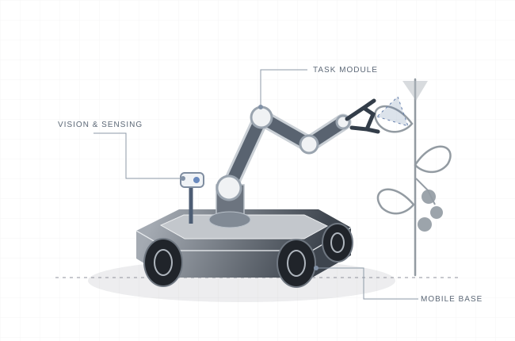

Better crop care.
Built from
real needs.
We’re developing the foundations of a modular agricultural robot—starting with growers’ experience, a small mobile platform, and a carefully defined task.

Illustrative concept · Hardware and configuration to be validatedA useful robot starts
with a good question.
Crop care combines repetitive work with delicate decisions. A useful robot has to fit the crop, the growing space, and the people working around it.
One candidate task is tomato leaf removal, with targeted wound protection when appropriate. We’re evaluating this direction alongside the practical requirements of the mobile platform. The final task will be shaped by grower input and early testing.
What actually takes time?
Understand recurring tasks, current tools, and the labour involved in completing an entire growing row.
What does a good result look like?
Define acceptable crop handling, cutting quality, and when a task needs human judgement.
What fits the farm?
Measure working heights, aisle access, rails, and the routines the robot would need to work within.
One system.
Four connected disciplines.
A modular architecture lets us test each part, learn from it, and bring the pieces together.
Mobile platform
A compact base designed around the terrain, crop access, and stability required by the chosen task.
Power & interfaces
Motor control, power distribution, sensor connections, and dependable low-level operation.
Visual understanding
Camera-based observation and target localisation, tested against real lighting and occlusion.
Movement & task control
Positioning, controlled motion, and coordination between the platform and a task-specific tool.
Autonomy, task completion, labour savings, and crop benefits will need to be measured. Any wound-treatment function depends on an appropriate agronomic protocol.
A focused path
to a first prototype.
A four-month development goal, organised around learning milestones. Timing depends on access, resources, and test results.
Listen & define
Visit farms, record the current workflow, and choose a bounded task with a clear baseline.
Current focusBuild & bench-test
Develop the platform and task module. Measure positioning, repeatability, and tool behaviour.
PlannedConnect the system
Bring sensing, controls, and hardware together in a limited, repeatable test environment.
PlannedTest & learn
Compare supervised robot operation with the existing workflow and document what still needs work.
PlannedOur classroom extends
to the field.
Our October 23 visit to Hoffman’s Strawberries was an opportunity to ask questions and learn about the work behind food production. These conversations help us approach engineering with a better understanding of real needs.
Read the visit recapProgress you can
put to the test.
A successful demonstration is a starting point. We want to understand how the system performs across repeated tasks, how often it needs help, and whether it improves the overall workflow.
Have a challenge we should understand?
We’d love to hear from growers, engineers, and mentors who can help turn a promising idea into a useful first build.